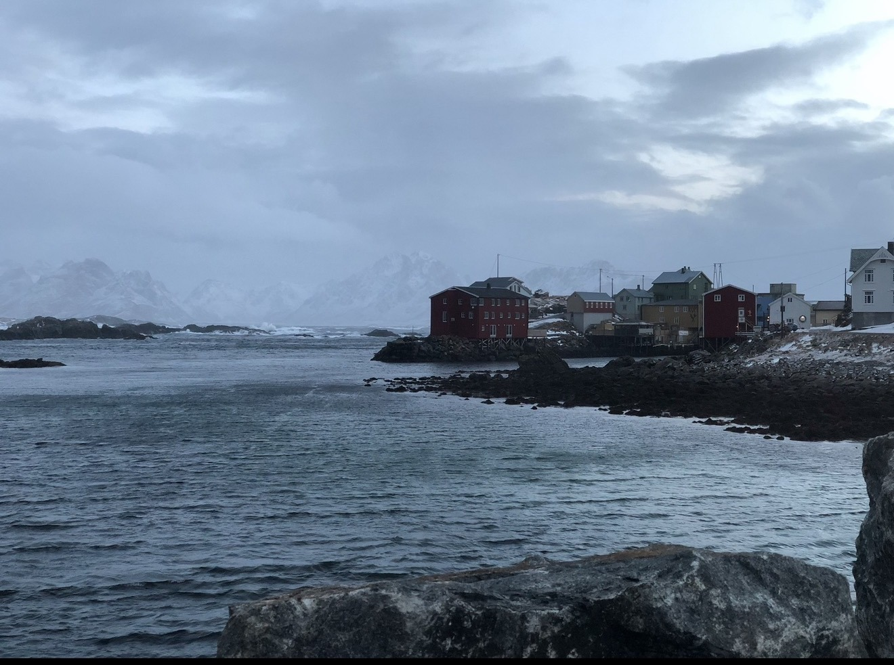
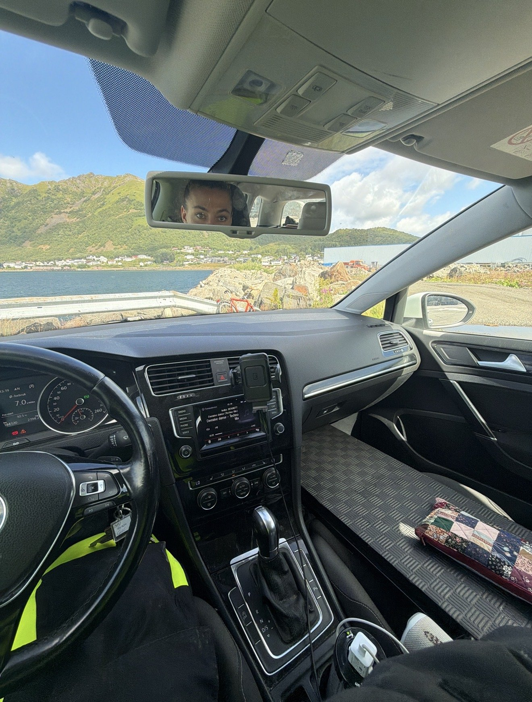
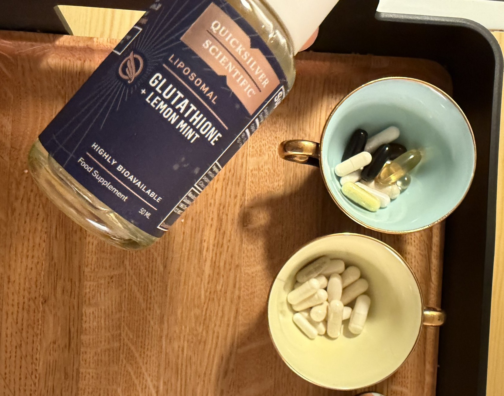
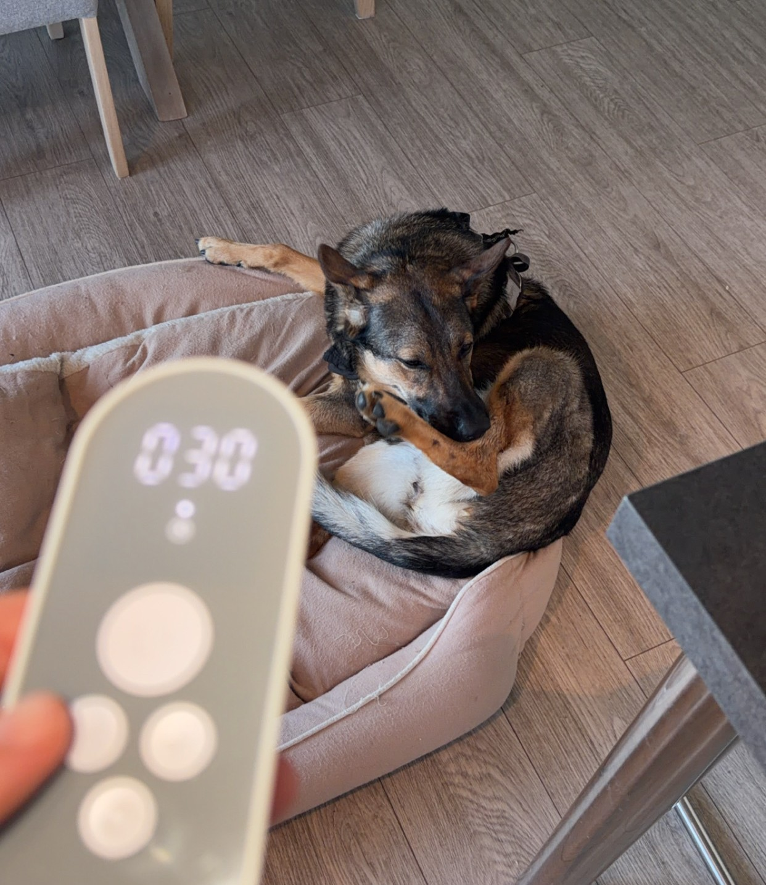

status på protokollen: alt Bryan Johnson sier du skal gjøre, i feil rekkefølge, med mye mindre penger.state of the protocol: everything Bryan Johnson says to do, in the wrong order, on a lot less money.
Det er en stund siden sist. Ikke fordi ingenting skjer, men fordi det som skjer er sånt som ikke føles som nyheter. Man tar tilskuddene sine. Man legger seg. Man står opp. Ingen lager film av det.It's been a while. Not because nothing's happening, but because what's happening isn't the kind of thing that feels like news. You take your supplements. You go to bed. You get up. Nobody makes a movie about it.

Men så satte jeg meg ned og skrev lista over hva som faktisk er nytt, og den ble ganske lang. Så her er den.But then I sat down and wrote out the list of what's actually new, and it turned out pretty long. So here it is.
først: regelen jeg driter ifirst: the rule I'm ignoring
Bryan Johnson har én regel som er viktigere enn alle andre: mål først, suppler etterpå. Ta blodprøver. Finn ut hva kroppen din faktisk mangler. Ikke gjett.Bryan Johnson has one rule that matters more than all the others: measure first, supplement after. Get bloodwork. Find out what your body is actually missing. Don't guess.
Jeg gjetter.I guess.
Ikke fordi han tar feil. Han har helt rett. Men han har også et eget laboratorium og mer penger enn Vesterålen. Jeg har et legekontor som ikke får tatt blodprøvene mine ennå, og en flytur til Oslo som koster mer enn jeg har. Og etter det året kroppen min gikk i vranglås er ikke en flytur bare en flytur. Det er et fjell.Not because he's wrong. He's completely right. But he also owns a lab and has more money than Vesterålen. I've got a doctor's office that hasn't managed to draw my blood yet, and a flight to Oslo that costs more than I have. And after the year my body seized up, a flight isn't just a flight. It's a mountain.
Så jeg begynte i feil ende. Jeg leser meg opp, jeg tar det han tar, og jeg venter på tallene. Det er ikke sånn man skal gjøre det. Det var sånn jeg kunne gjøre det. Det får holde.So I started at the wrong end. I read up, I take what he takes, and I wait for the numbers. It's not how you're supposed to do it. It was how I could do it. That'll have to be enough.
nytt i protokollennew in the protocol
1. Snake Oil. Olivenoljen til Bryan Johnson. Ja, den heter faktisk det. Jeg har altså bestilt snake oil fra en mann på internett, og jeg gleder meg. Den har ikke kommet ennå, så den får vise hva den kan i et eget innlegg.1. Snake Oil. Bryan Johnson's olive oil. Yes, that's actually what it's called. So I've ordered snake oil from a guy on the internet, and I'm excited. It hasn't shown up yet, so it'll get to prove itself in its own post.
2. Glutation. Ny på brettet. Og her kjenner jeg stor forskjell. Kan jeg bevise det? Nei. Jeg tar mange tilskudd samtidig og har null målinger, så jeg aner ikke hva som gjør hva. Men kroppen min sier ifra, og akkurat nå er kroppen det eneste måleinstrumentet jeg har råd til.2. Glutathione. New on the tray. And I feel a real difference here. Can I prove it? No. I take a lot of supplements at once and have zero measurements, so I have no idea what's doing what. But my body is saying something, and right now my body is the only measuring instrument I can afford.

3. Kaffe hadde ikke regler før. Nå: én kopp før tolv, ingenting etter. I tillegg en matcha og en shot Magic Mind. Magic Mind er ikke Bryan Johnson, og jeg vet ikke om jeg fortsetter med den, men den er god. Jeg prøver ting. Det er lov.3. Coffee had no rules before. Now: one cup before noon, nothing after. Plus a matcha and a shot of Magic Mind. Magic Mind isn't Bryan Johnson, and I don't know if I'll stick with it, but it's good. I try things. That's allowed.
søvn: det viktigste jeg har lært i årsleep: the most important thing I've learned this year
Før var jeg stolt når jeg sto opp klokka fire eller fem. Jeg trodde det var disiplin. Men står du opp klokka fire etter fem timers søvn, er du ikke disiplinert. Da er du dum.I used to be proud of getting up at four or five. I thought that was discipline. But if you get up at four on five hours of sleep, you're not disciplined. You're dumb.
Målet var aldri å stå opp tidlig. Målet er å sove godt. Så jeg flytta hele døgnet mitt, fra ni–fem til elleve–sju. Alt som skjer her oppe skjer på kvelden, og hver gang jeg skulle være med på noe, ødela det natta mi. Nå er regelen enkel:The goal was never to get up early. The goal is to sleep well. So I moved my whole day, from nine-to-five to eleven-to-seven. Everything that happens up here happens at night, and every time I said yes to something, it wrecked my sleep. Now the rule is simple:
1. Legg deg til samme tid. Hver dag.1. Go to bed at the same time. Every day.
2. Stå opp til samme tid. Hver dag.2. Get up at the same time. Every day.
3. Ferdig.3. Done.
Kvelden har også fått et opplegg: briller som blokkerer blått lys, tøying, noe rolig, Nurosym på vagusnerven. Og det nyeste. En halvtime med theta-bølger på øret før jeg sovner. Jeg vet ikke helt hva theta-bølger er. Men jeg sovner, og jeg har sovet bedre de siste nettene enn på lenge. Jeg trenger ikke vite mer.The evening has a routine too: blue-light blocking glasses, stretching, something calm, Nurosym on the vagus nerve. And the newest one, half an hour of theta waves in my ear before I fall asleep. I don't really know what theta waves are. But I fall asleep, and I've slept better these last few nights than in a long time. I don't need to know more.

kroppenthe body
Nytt siden sist: løping med vektvest. Styrke, tøying, løping med vektvest. Trening tidlig på dagen når jeg klarer det. Det er også fra Bryan Johnson, og nei, jeg klarer det ikke alltid. Men fysikken kommer tilbake. Det er godt å kjenne når så mye annet er utenfor kontroll.New since last time: running with a weight vest. Strength, stretching, running with a weight vest. Training early in the day when I can pull it off. That's also Bryan Johnson, and no, I can't always pull it off. But the fitness is coming back. Feels good to feel that when so much else is out of my hands.
WHOOP-en min følger med på alt sammen: søvn, restitusjon, trening. Den lyver ikke, og det er både det beste og det verste med den. Tenker du på å starte? Gjør det. En gratis måned til deg (annonselenke). En kickback til meg.My WHOOP tracks all of it: sleep, recovery, training. It doesn't lie, and that's both the best and worst thing about it. Thinking of starting? Do it. A free month for you (affiliate link). A kickback to me.
feilene i systemetthe flaws in the system
Jo lenger jeg holder på med dette, jo flere feil finner jeg i systemet. Og det er ikke småting:The longer I keep at this, the more flaws I find in the system. And they're not small ones:
1. Det er nesten umulig å få målt noe som helst uten å reise langt og betale mye.1. It's almost impossible to get anything measured without traveling far and paying a lot.
2. Tilskudd er dyre og tungvinte å få tak i her.2. Supplements are expensive and a hassle to get up here.
3. Sist skrev jeg at papirene var i gang. Her er status: det står ikke på meg. Sånn testing som Bryan gjør finnes rett og slett ikke her. Legekontoret sjekker hva de kan få til med en privat klinikk, mot betaling. De er ikke sikre på at de har kapasitet til å ta så mange prøver og sende dem. Det nærmeste jeg har funnet er en klinikk i Oslo. Tretti tusen kroner. Uten fly og hotell. Neste møte får jeg vite mer. For å være ærlig: dette er vanskelig, for jeg vil så gjerne få tatt testene.3. Last time I said the paperwork was moving. Here's the status: it's not on me. The kind of testing Bryan does simply doesn't exist here. The medical office is checking what they can arrange with a private clinic, for a fee. They're not sure they have the capacity to take that many samples and ship them. The closest I've found is a clinic in Oslo. Thirty thousand kroner. Not counting flight and hotel. I'll find out more at the next appointment. I'll be honest: this is hard. I really want to get these tests done.
Bryan Johnson kan leve som han gjør fordi han er rik. Jeg klager ikke, det er bare sant. Men det betyr at for vanlige folk er denne typen helse nesten stengt. Jeg er heldig. Foreldrene mine vil se meg frisk og hjelper meg med tilskudd innimellom. Det er ikke alle som har det.Bryan Johnson can live the way he does because he's rich. I'm not complaining, it's just true. But it means that for regular people, this kind of health is almost closed off. I'm lucky. My parents want to see me well and help me with supplements sometimes. Not everyone has that.
Så kanskje er dette det egentlige målet nå: finne flere som vil det samme, kjøpe inn sammen, dele det som funker, og gjøre dette mulig for folk uten laboratorium. For helse burde ikke være noe bare rike folk har råd til.So maybe this is the real goal now: find more people who want the same thing, buy in together, share what works, and make this doable for people without a lab. Because health shouldn't be something only rich people can afford.
tallet jeg faktisk harthe one number I actually have
WHOOP-en gir meg HRV, recovery, søvn. Bra informasjon å ha. Tallet jeg egentlig leter etter er ikke der. PTSD-en har ingen prosent-visning på håndleddet. Så jeg måler den selv. Uker med protokoll, ting blir litt bedre. Uker uten. Det blir verre. Samme mønster hver gang. Bare jeg har sjekket det. Men jeg har sjekket det ganske grundig. Noe av dette funker.The WHOOP gives me HRV, recovery, sleep. Good information to have. The number I'm actually looking for isn't there. PTSD doesn't have a percent readout on your wrist. So I track it myself. Weeks on the protocol, things get a little better. Weeks off. It gets worse. Same pattern every time. Only I've checked it. But I've checked it pretty thoroughly. Some of this works.
fortsettelse følger. med eller uten tall.to be continued. with or without numbers.
Thorne-kurven med rabattkode ligger her (annonselenke). Resten står i pakken kom.The Thorne cart with the discount code is here (affiliate link). The rest is in pakken kom.
<333